以下是我从其他网站中学的内容，后有相应的网站学习链接地址，可供学习
1.选择菜单项File->New->Project，弹出“New Project”对话框。
2.左侧面板中Installed Templated的Visual C++下选择MFC，中间窗口中选择MFC Application，然后在下面的Name编辑框中键入工程名称，本例取名“Addition”，在Location编辑框中设置工程的保存路径。点“OK”。
3.点“Next”到“Application Type”对话框，在Application type下选择Dialog based，其他使用默认设置，点“Finish”。
我们可以在Solution Explorer视图中看到，此工程的文件要比单文档应用程序少的多，在Class View中主要有三个类：CAboutDlg、CAdditionApp和CAdditionDlg。CAboutDlg是应用程序的“关于”对话框类，CAdditionApp是由CWinApp派生的类，CAdditionDlg是主对话框类，主对话框也就是此应用程序运行后显示的主要界面。
在Resource View视图中可以看到工程Addition的资源树，展开Addition.rc，下面有四个子项：Dialog（对话框）、Icon（图标）、String Table（字符串表）和Version（版本）。然后展开Dialog项，下面有两个对话框模板，其ID分别为：IDD_ABOUTBOX和IDD_ADDITION_DIALOG，前者是“关于”对话框的模板，后者是主对话框的模板。ID是资源的唯一标识，本质上是一个无符号整数，一般ID代表的整数值由系统定义，我们无需干涉。
可见对于主对话框来说，创建对话框第一步中的创建新的对话框模板已经由系统自动完成了。而如果是再添加对话框需要创建新的对话框模板时，需要在Resource View的“Dialog”节点上点右键，在右键菜单中选择“Insert Dialog”，就会生成新的对话框模板，并且会自动分配ID。
在Resource View的资源树中双击某个ID，可在中间区域内显示相应的资源界面。双击IDD_ADDITION_DIALOG时，中间区域就会显示Addition对话框模板。如下图：
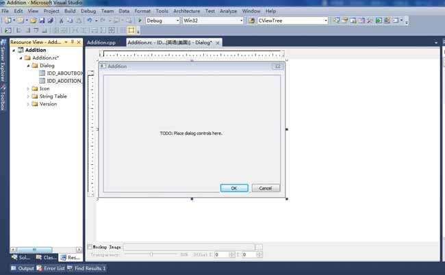
在Addition对话框模板上点右键，然后在右键菜单中选择Properties，则在右侧面板中会显示对话框的属性列表。如下图：
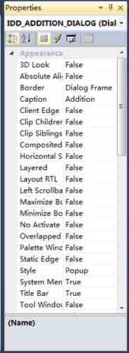
1.ID：对话框ID，唯一标识对话框资源，可以修改。此处为IDD_ADDITION_DIALOG，我们不修改它。
2.Caption：对话框标题。此处默认为Addition，我们将其修改为“加法计算器”。
3.Border：边框类型。有四种类型：None、Thin、Resizing和Dialog Frame。我们使用默认的Dialog Frame。
4.Maximize：是否使用最大化按钮。我们使用默认的False。
5.Minimize：是否使用最小化按钮。同样我们使用默认的False。
6.Style：对话框类型。有三种类型：Overlapped（重叠窗口）、Popup（弹出式窗口）和Child（子窗口）。弹出式窗口比较常见。我们使用默认的Popup类型。
7.System Menu：是否带有标题栏左上角的系统菜单，包括移动、关闭等菜单项。我们使用默认的True。
8.Title Bar：是否带有标题栏。我们使用默认的True。
9.Font(Size)：字体类型和字体大小。如果将其修改为非系统字体，则Use System自动改为False。而如果Use System原来为False，将其修改为True，则Font(Size)自动设置为系统字体。这里我们使用默认的系统字体。
根据以上说明，其实我们只修改了标题属性。这时我们运行此程序后的界面如下：

1.为对话框添加一个静态文本框（Static Text），用于显示字符串–“被加数”。
对于自动添加的一个标题为“TODO:Place dialog controls here.”的静态文本框，这里将它删掉，继续添加新的静态文本框。
删除控件时，可以使用鼠标左键点击选中它，选中后控件的周围会出现虚线框，然后按Delete键就可以将其删除了。在“Addition”工程的Resource View中打开上一讲中创建的对话框模板IDD_ADDITION_DIALOG，自动添加的静态文本框就可以使用这种方法删除。
在添加新的静态文本框以前，先看看Toolbox视图是否显示了，如果没有显示，在菜单栏上点击View->Toolbox即可。Toolbox视图如下图：
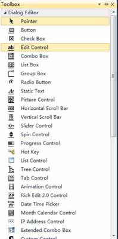
Toolbox中列出了一些常用控件，其中有一个是Static Text，即是我们要添加的控件。在Toolbox中的Static Text上点下鼠标左键不放开，并拖到IDD_ADDITION_DIALOG对话框模板上，模板上会出现一个虚线框，我们找到合适的位置松开鼠标左键放下它。
用鼠标左键选中控件后周围出现虚线框，然后鼠标移到虚线框上几个黑点的位置会变成双向箭头的形状，此时就可以按下鼠标左键并拖动来改变控件大小了。我们可以这样改变新添加的静态文本框控件的大小，以更好的显示标题。当然，整个对话框模板也可以用这种方法改变大小。
接下来就该修改静态文本框的文字了。鼠标右键点击静态文本框，在右键菜单中选择“Properties”，Properties面板就会显示出来，在面板上修改Caption属性为“被加数”，ID修改为IDC_SUMMAND_STATIC。此时模板如下图：

2.为对话框添加一个编辑框（Edit Control），用来输入被加数。
添加编辑框的过程与静态文本框类似，在Toolbox中选中Edit Control控件拖到对话框模板上，并使其与之前的静态文本框水平对齐（为了美观），然后调整其大小使之适合被加数的输入。
在编辑框上点右键，仍然在右键菜单中选择“Properties”显示出属性（Properties）面板，修改其ID为IDC_SUMMAND_EDIT。此时模板如下图：

3.按照1的方法添加一个标题为“加数”的静态文本框，用于显示字符串–“加数”。并将其ID改为IDC_ADDEND_STATIC。
4.按照2的方法添加一个ID为IDC_ADDEND_EDIT的编辑框，用来输入加数。
5.按照1的方法添加一个标题为“和”的静态文本框，用于显示文字–“和”。并修改其ID为IDC_SUM_STATIC。
6.按照2的方法添加一个ID为IDC_SUM_EDIT的编辑框，用来显示最终的加和。
7.类似的添加按钮（Button）控件到对话框模板，用于在被点击后触发加法计算。修改其标题为“计算”，ID为IDC_ADD_BUTTON。
到此，对话框模板如图：
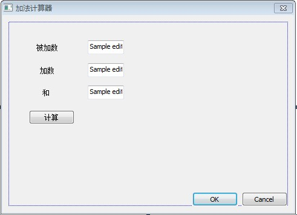
8.删除OK按钮。打开Cancel按钮的属性面板，将标题改为“退出”，并使其与“计算”按钮水平对齐。
9.根据控件的布局，适当调整整个对话框模板的大小，使其相对控件布局来说大小合适，界面美观。
这样在对话框模板中就把我们在本例中需要用到的控件就添加完了。最终效果如下：

因为例程Addition是基于对话框的程序，所以程序自动创建了对话框模板IDD_ADDITION_DIALOG，并自动生成了对话框类CAdditionDlg，它是从CDialogEx类派生的。大家用过VC++ 6.0的可能记得，我们定义的对话框类都是从CDialog类派生的，但在VS2010中，一般对话框类都是继承自CDialogEx类。
创建对话框类
如果是自己新添加的对话框模板，怎样为它创建对话框类呢？
1.在Resource View的“Dialog”节点上右键，然后在右键菜单中选择“Insert Dialog”创建一个新的对话框模板，ID就使用默认的IDD_DIALOG1。
2.在中间区域会显示新建的对话框模板，然后选中此对话框模板，点右键，在右键菜单中选择Add Class。
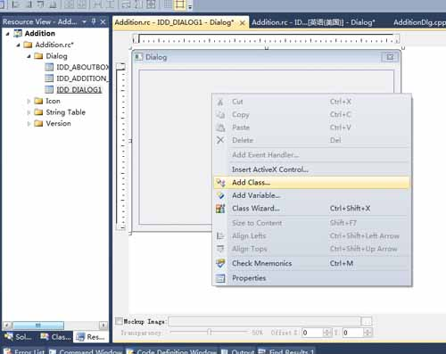
3.选择“Add Class”后会弹出一个对话框，在对话框中“Class name”下的编辑框中写入自定义的类名就可以了，例如CMyDialog。
4.最后点“Finish”完成。
最终你就可以在Class View中看到新生成的对话框类CMyDialog了，并且在Solution Explorer中有相应的MyDialog.h头文件和MyDialog.cpp源文件生成。CMyDialog类同样派生于CDialogEx类。
注意，一般类名都以C打头，又比如，CTestDlg。
为对话框中的控件添加变量
在上一讲中为对话框添加了几个控件，包括三个静态文本框，三个编辑框，一个按钮控件。程序自动生成的Cancel按钮保留，作为退出按钮，而OK按钮删除掉了。
静态文本框只是为了说明后面紧跟的编辑框中数据的意义，是被加数、加数还是和，所以它们是不会变的，我们就不为它们添加变量了。按钮控件是用来操作的，这里也不为它们添加变量。编辑框中的数据可能会经常变化，有必要为它们每个控件关联一个变量。
首先为被加数的编辑框IDC_SUMMAND_EDIT添加变量。
1.在编辑框上点右键，在右键菜单中选择“Add Variable”。弹出添加成员变量的向导对话框。
2.我们想为其添加值变量而不是控件变量，所以对话框中“Category”下的组合框中选择Value。
3.“Variable type”下的组合框此时默认选中的是“CString”，CString是字符串类，显然不能进行加法运算。我们可以选择double、float、int等。这里我们选择double，即编辑框关联一个double类型的变量。
4.在“Variable name”中写入自定义的变量名。为其取名m_editSummand。
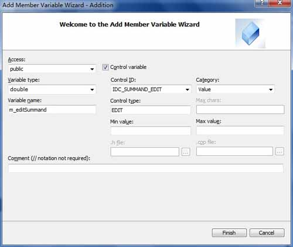
5.点“Finish”完成。
注意，类的成员变量名一般以m_打头，以标识它是一个成员变量。
参照此方法，再分别为加数的编辑框IDD_ADDEND_EDIT添加double型变量m_editAddend、和的编辑框IDD_SUM_EDIT添加double型变量m_editSum。
对话框类的数据交换和检验
在程序运行界面中，用户往往会改变控件的属性，例如，在编辑框中输入字符串，或者改变组合框的选中项，又或者改变复选框的选中状态等。控件的属性改变后MFC会相应修改控件关联变量的值。这种同步的改变是通过MFC为对话框类自动生成的成员函数DoDataExchange()来实现的，这也叫做对话框的数据交换和检验机制。
我们为三个编辑框添加了变量以后，在AdditionDlg.cpp中CAdditionDlg的DoDataExchange()函数的函数体中多了三条DDX_Text调用语句。下面是函数体代码和添加的注释。1
2
3
4
5
6
7
8
9
10
11
12C++代码
void CAdditionDlg::DoDataExchange(CDataExchange* pDX)
{
// 处理MFC默认的数据交换
CDialogEx::DoDataExchange(pDX);
// 处理控件IDC_SUMMAND_EDIT和变量m_editSummand之间的数据交换
DDX_Text(pDX, IDC_SUMMAND_EDIT, m_editSummand);
// 处理控件IDC_ADDEND_EDIT和变量m_editAddend之间的数据交换
DDX_Text(pDX, IDC_ADDEND_EDIT, m_editAddend);
// 处理控件IDC_SUM_EDIT和变量m_editSum之间的数据交换
DDX_Text(pDX, IDC_SUM_EDIT, m_editSum);
}
再以Addition程序为例简单说下数据交换机制。如果我们在程序运行界面中输入被加数，则通过CAddition的DoDataExchange()函数可以将输入的值保存到m_editSummand变量中，反之如果程序运行中修改了变量m_editSummand的值，则通过CAddition的DoDataExchange()函数也可以将新的变量值显示到被加数的编辑框中。
但是这种数据交换机制中，DoDataExchange()并不是被自动调用的，而是需要我们在程序中调用CDialogEx::UpdateData()函数，由UpdateData()函数再去自动调用DoDataExchange()的。
CDialogEx::UpdateData()函数的原型为：
BOOL UpdateData(BOOL bSaveAndValidate = TRUE);
参数：bSaveAndValidate用于指示数据传输的方向，TRUE表示从控件传给变量，FALSE表示从变量传给控件。默认值是TRUE，即从控件传给变量。
返回值：CDialogEx::UpdateData()函数的返回值表示操作是否成功，成功则返回TRUE，否则返回FALSE。
在下一讲中将具体演示CDialogEx::UpdateData()函数如何使用。
本节主要讲的是新建对话框类和添加控件变量，控件的消息处理函数将在下一讲详细介绍。
创建对话框类和添加控件变量在上一讲中已经讲过，这一讲的主要内容是如何为控件添加消息处理函数。
MFC为对话框和控件等定义了诸多消息，我们对它们操作时会触发消息，这些消息最终由消息处理函数处理。比如我们点击按钮时就会产生BN_CLICKED消息，修改编辑框内容时会产生EN_CHANGE消息等。一般为了让某种操作达到效果，我们只需要实现某个消息的消息处理函数。
一.添加消息处理函数
以前面的加法计算器的程序为例，说明怎样为“计算”按钮控件添加消息处理函数。添加方法列出4种：
1.使用Class Wizard添加消息处理函数
用过的VC++ 6.0的朋友应该对Class Wizard很熟悉了，添加类、消息处理函数等经常会用到它，可以说是一个很核心的功能。但从VS2002开始就见不到Class Wizard了，大部分功能都集成到对话框和控件等的属性中了，使用很方便。到VS2010，久违的Class Wizard又回来了。但已经习惯了使用属性中的功能了，对于从VC++ 6.0直接转VS2010的朋友可能觉得还是使用Class Wizard比较习惯。
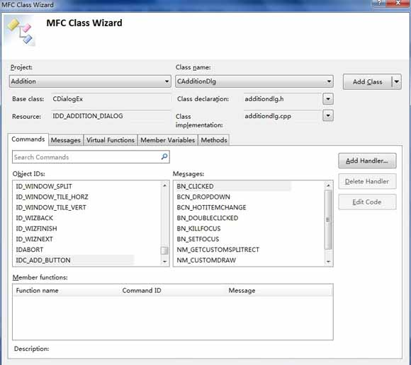
大家应该记得，“计算”按钮的ID为IDC_ADD_BUTTON，上图中Commands标签下，Oject IDs列表中有此ID，因为我们是想实现点击按钮后的消息处理函数，所以在Messages列表中选择BN_CLICKED消息，然后点右上方的Add Handler就可以添加BN_CLICKED消息处理函数OnClickedAddButton了。当然你也可以改名，但一般用的默认的就可以。
2.通过“Add Event Handler…”添加消息处理函数
在“计算”按钮上点右键，然后在右键菜单中选择菜单项“Add Event Handler…”，弹出“Event Handler Wizard”对话框，如下图：
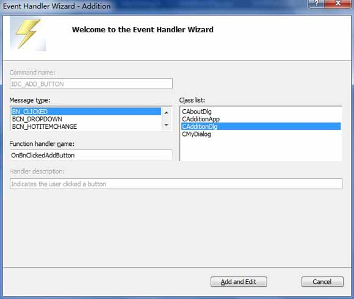
可见“Message type”中默认选中的就是BN_CLICKED消息，函数名和所在类都已经自动给出，直接点“Add and Edit”就可以了。
3.在按钮的属性视图中添加消息处理函数
上面说过，从VS2002开始就主要从属性视图添加消息处理函数了。我们在“计算”按钮上点右键，在右键菜单中选择“Properties”，右侧面板中会显示按钮的属性视图。
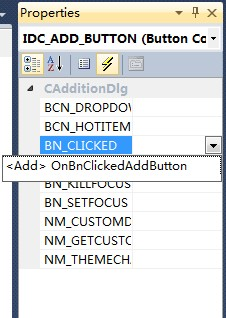
我们可以像上图中那样，点属性视图的“Control Events”按钮（类似闪电标志），下面列出了“计算”按钮的所有消息。我们要处理的是BN_CLICKED消息，点其右侧空白列表项，会出现一个带下箭头的按钮，再点此按钮会出现“
4.双击按钮添加消息处理函数
最直接最简单的方法就是，双击“计算”按钮，MFC会自动为其在CAdditionDlg类中添加BN_CLICKED消息的处理函数OnBnClickedAddButton()。
二.在消息处理函数中添加自定义功能
在我们使用任意一种方法添加了消息处理函数以后，都只能得到一个空的OnBnClickedAddButton()函数的函数体，要实现我们想要的功能，还需要在函数体中加入自定义功能代码。
在加法计算器程序中，我们想要“计算”按钮实现的功能是，获取被加数和加数的数值，然后计算它们的和并显示到和的编辑框里。那么，OnBnClickedAddButton()的函数体就应修改为：1
2
3
4
5
6
7
8
9
10
11
12
13C++代码
void CAdditionDlg::OnBnClickedAddButton()
{
// TODO: Add your control notification handler code here
// 将各控件中的数据保存到相应的变量
UpdateData(TRUE);
// 将被加数和加数的加和赋值给m_editSum
m_editSum = m_editSummand + m_editAddend;
// 根据各变量的值更新相应的控件。和的编辑框会显示m_editSum的值
UpdateData(FALSE);
}
在上面的代码中已经添加注释，大家应该很容易理解了。对于UpdateData()函数的说明在上一讲中已经介绍过，如果忘了可以再回上一讲了解了解。
接下来我们运行下此应用程序。在运行结果界面中，输入被加数5.1，加数2.3，然后点“计算”：

在上图中可以看到，点“计算”按钮后，和的编辑框中显示了正确结果：7.4。
简单分析下运行过程：输入被加数和加数，点“计算”按钮后产生点击消息，从而调用OnBnClickedAddButton()函数。进入此函数后，首先由UpdateData(TRUE)函数将被加数的值5.1和加数的值2.3分别保存到变量m_editSummand和m_editAddend，然后通过语句m_editSum = m_editSummand + m_editAddend;计算出被加数和加数的和为7.4，并把7.4赋值给m_editSum。最后调用UpdateData(FALSE)根据被加数、加数、和的值更新三个编辑框的显示值，就得到了上图中的结果。
到此，一个具有简单的加法运算功能的加法计算器应用程序就基本完成了。
本节主要讲对话框上控件的Tab顺序如何调整。
上一讲为“计算”按钮添加了消息处理函数后，加法计算器已经能够进行浮点数的加法运算。但是还有个遗留的小问题，就是对话框控件的Tab顺序问题。
运行加法计算器程序，显示对话框后不进行任何操作，直接按回车，可以看到对话框退出了。这是因为“退出”按钮是Tab顺序为1的控件，也就是第一个接受用户输入的控件。但是按照我们的输入习惯，应该是被加数的编辑框首先接受用户输入，然后是加数编辑框，再接下来是“计算”按钮，最后才是“退出”按钮。
我们先来直观的看看各个控件的Tab顺序吧。打开“Resource View”视图，然后在资源中找到对话框IDD_ADDITION_DIALOG，双击ID后中间客户区域出现其模板视图。在主菜单中选择“Format”->”Tab Order”，或者按快捷键Ctrl+D，对话框模板上就会显示各个控件的Tab顺序数字。如下图：

上图中每个控件左上角都有一个数字，这就是它的Tab响应顺序。对话框刚打开时输入焦点就在Tab顺序为1的“退出”按钮上，不做任何操作按下Tab键，输入焦点就会转移到Tab顺序为2的“被加数”静态文本框上，但是因为静态文本框不接受任何输入，所以输入焦点继续自动转移到Tab顺序为3的被加数编辑框，再按Tab键，输入焦点又会转移到Tab顺序为4的“加数”静态文本框上，同样由于它是静态文本框，输入焦点不停留继续转移到加数编辑框，后面的控件同理。
我们认为这个顺序不合理，那怎么修改呢？很简单，从自己认为Tab顺序应该为1的控件开始依次单击，随着单击的完成，各控件的Tab响应顺序也按我们的想法设置好了。
例如，此例中我们可以依次单击被加数编辑框、“被加数”静态文本框、加数编辑框、“加数”静态文本框、和编辑框、“和”静态文本框、“计算”按钮和“退出”按钮。设置完后如下图：

最后按ESC键，确认设置并退出对话框模板的Tab顺序设置状态。
现在我们再运行程序，可以看到对话框打开后最初的输入焦点在被加数编辑框上，然后我们按Tab键，输入焦点移到加数编辑框上，继续多次按Tab键时，输入焦点会按“和编辑框–‘计算’按钮–‘退出’按钮–被加数编辑框–加数编辑框–和编辑框……”的顺序循环转移。这样就达到了我们的目的。
加法计算器对话框程序大家照着做一遍后，相信对基于对话框的程序有些了解了，有个好的开始对于以后的学习大有裨益。趁热打铁，这一节讲讲什么是模态对话框和非模态对话框，以及模态对话框怎样弹出。
一.模态对话框和非模态对话框
Windows对话框分为两类：模态对话框和非模态对话框。
模态对话框是这样的对话框，当它弹出后，本应用程序其他窗口将不再接受用户输入，只有该对话框响应用户输入，在对它进行相应操作退出后，其他窗口才能继续与用户交互。
非模态对话框则是，它弹出后，本程序其他窗口仍能响应用户输入。非模态对话框一般用来显示提示信息等。
大家对Windows系统很了解，相信这两种对话框应该都遇到过。之前的加法计算器对话框其实就是模态对话框。
二.模态对话框是怎样弹出的
毕竟加法计算器程序大部分都是MFC自动生成的，对话框怎么弹出来的大家可能还不是很清楚。下面简单说说它是在哪里弹出来的，再重新建一个新的对话框并弹出它，这样大家实践以后就能更灵活的使用模态对话框了。
大家打开Addition.cpp文件，可以看到CAdditionApp类有个InitInstance()函数，在MFC应用程序框架分析中提到过此函数，不过那是单文档应用程序App类中的，函数体不太相同，但都是进行App类实例的初始化工作。
InitInstance()函数的后半部分有一段代码就是定义对话框对象并弹出对话框的，下面给出这段代码并加以注释：1
2
3
4
5
6
7
8
9
10
11
12
13
14C++代码
CAdditionDlg dlg; // 定义对话框类CAdditionDlg的对象dlg
m_pMainWnd = &dlg; // 将dlg设为主窗口
INT_PTR nResponse = dlg.DoModal(); // 弹出对话框dlg，并将DoModal函数的返回值（退出时点击按钮的ID）赋值给nResponse
if (nResponse == IDOK) // 判断返回值是否为OK按钮（其ID为IDOK，已经将它删除）
{
// TODO: Place code here to handle when the dialog is
// dismissed with OK
}
else if (nResponse == IDCANCEL) // 判断返回值是否为Cancel按钮（其ID为IDCANCEL，将它的Caption改为了“退出”）
{
// TODO: Place code here to handle when the dialog is
// dismissed with Cancel
}
弹出对话框比较关键的一个函数，就是对话框类的DoModal()函数。CDialog::DoModal()函数的原型为：
virtual INT_PTR DoModal();
返回值：整数值，指定了传递给CDialog::EndDialog（该函数用于关闭对话框）的nResult参数值。如果函数不能创建对话框，则返回-1；如果出现其它错误，则返回IDABORT。
调用了它对话框就会弹出，返回值是退出对话框时所点的按钮的ID，比如，我们点了“退出”按钮，那么DoModal返回值为IDCANCEL。
三.添加一个新对话框并弹出它
再为加法计算器程序添加一个对话框，以在计算之前询问用户是否确定要进行计算。大家可以完整的看下对话框的添加和弹出过程。
1.在Resource View中的“Dialog”上点右键选择“Insert Dialog”，创建一个新的对话框模板，修改其ID为IDD_TIP_DIALOG，Caption改为“提示”，然后参考“为对话框添加控件”中所讲，在对话框模板上添加一个静态文本框（static text），Caption改为“您确定要进行加法计算吗？”，接下来修改OK按钮的Caption为“确定”，Cancel按钮的Caption为“取消”，最后调整各个控件的位置和对话框的大小。最终的对话框模板如下图：

2.根据“创建对话框类和添加控件变量”中创建对话框类的方法，在对话框模板上点右键选择“Add Class…”，弹出添加类的对话框，设置“Class name”为CTipDlg，点“OK”。在Solution Explorer中可以看到生成了CTipDlg类的头文件TipDlg.h和源文件TipDlg.cpp。
3.我们要在点“计算”按钮之后弹出此提示对话框，那么就要在“计算”按钮的消息处理函数OnBnClickedAddButton()中访问提示对话框类，所以为了访问CTipDlg类，在AdditionDlg.cpp中包含CTipDlg的头文件：#include “TipDlg.h”。
4.修改OnBnClickedAddButton()的函数体，在所有代码前，构造CTipDlg类的对象tipDlg，并通过语句tipDlg.DoModal();弹出对话框，最后判断DoModal()函数的返回值是IDOK还是IDCANCEL来确定是否继续进行计算。OnBnClickedAddButton()函数修改后如下：1
2
3
4
5
6
7
8
9
10
11
12
13
14
15
16
17
18
19
20C++代码
void CAdditionDlg::OnBnClickedAddButton()
{
// TODO: Add your control notification handler code here
INT_PTR nRes; // 用于保存DoModal函数的返回值
CTipDlg tipDlg; // 构造对话框类CTipDlg的实例
nRes = tipDlg.DoModal(); // 弹出对话框
if (IDCANCEL == nRes) // 判断对话框退出后返回值是否为IDCANCEL，如果是则return，否则继续向下执行
return;
// 将各控件中的数据保存到相应的变量
UpdateData(TRUE);
// 将被加数和加数的加和赋值给m_editSum
m_editSum = m_editSummand + m_editAddend;
// 根据各变量的值更新相应的控件。和的编辑框会显示m_editSum的值
UpdateData(FALSE);
}
5.测试。编译运行程序后，在对话框上输入被加数和加数，点“计算”，弹出提示对话框询问是否进行计算，如果选择“确定”，则提示对话框退出，并在主对话框上显示被加数和加数的和，而如果选择“取消”，则提示对话框也会退出，但主对话框显示的和不变，即没有进行加法计算。
本节接着讲另一种对话框–非模态对话框的创建及显示。
已经说过，非模态对话框显示后，程序其他窗口仍能正常运行，可以响应用户输入，还可以相互切换。会将上一讲中创建的Tip模态对话框改为非模态对话框，让大家看下效果。
非模态对话框的对话框资源和对话框类
实际上，模态对话框和非模态对话框在创建对话框资源和生成对话框类上是没有区别的，所以上一讲中创建的IDD_TIP_DIALOG对话框资源和CTipDlg类都不需要修改。
创建及显示非模态对话框的步骤
需要修改的是，对话框类实例的创建和显示，也就是之前在CAdditionDlg::OnBnClickedAddButton()函数体中添加的对话框显示代码。下面是具体步骤：
1.在AdditionDlg.h中包含CTipDlg头文件并定义CTipDlg类型的指针成员变量。详细操作方法是，在AdditionDlg.cpp中删除之前添加的#include “TipDlg.h”，而在AdditionDlg.h中添加#include “TipDlg.h”，这是因为我们需要在AdditionDlg.h中定义CTipDlg类型的指针变量，所以要先包含它的头文件；然后在AdditionDlg.h中为CAdditionDlg类添加private成员变量CTipDlg *m_pTipDlg;。
2.在CAdditionDlg类的构造函数中初始化成员变量m_pTipDlg。如果cpp文件中函数太多，我们可以在Class View上半个视图中找到CAdditionDlg类，再在下半个视图中找到其构造函数双击，中间客户区域即可马上切到构造函数的实现处。在构造函数体中添加m_pTipDlg = NULL;，这是个好习惯，在C++编程入门系列的指针的赋值和指针运算中说到过，在任何指针变量使用前都初始化，可以避免因误访问重要内存地址而破坏此地址的数据。
3.将上一讲中添加的模态对话框显示代码注释或删除掉，添加非模态对话框的创建和显示代码。VC++中注释单行代码使用“//”，注释多行代码可以在需注释的代码开始处添加“/”，结束处添加“/”。修改后的CAdditionDlg::OnBnClickedAddButton()函数如下：1
2
3
4
5
6
7
8
9
10
11
12
13
14
15
16
17
18
19
20
21
22
23
24
25
26
27
28
29
30C++代码
void CAdditionDlg::OnBnClickedAddButton()
{
// TODO: Add your control notification handler code here
/*INT_PTR nRes; // 用于保存DoModal函数的返回值
CTipDlg tipDlg; // 构造对话框类CTipDlg的实例
nRes = tipDlg.DoModal(); // 弹出对话框
if (IDCANCEL == nRes) // 判断对话框退出后返回值是否为IDCANCEL，如果是则return，否则继续向下执行
return;*/
// 如果指针变量m_pTipDlg的值为NULL，则对话框还未创建，需要动态创建
if (NULL == m_pTipDlg)
{
// 创建非模态对话框实例
m_pTipDlg = new CTipDlg();
m_pTipDlg->Create(IDD_TIP_DIALOG, this);
}
// 显示非模态对话框
m_pTipDlg->ShowWindow(SW_SHOW);
// 将各控件中的数据保存到相应的变量
UpdateData(TRUE);
// 将被加数和加数的加和赋值给m_editSum
m_editSum = m_editSummand + m_editAddend;
// 根据各变量的值更新相应的控件。和的编辑框会显示m_editSum的值
UpdateData(FALSE);
}
4.因为此非模态对话框实例是动态创建的，所以需要手动删除此动态对象来销毁对话框。我们在CAdditionDlg类的析构函数中添加删除代码，但是MFC并没有自动给出析构函数，这时需要我们手动添加，在对话框对象析构时就会调用我们自定义的析构函数了。在AdditionDlg.h文件中为CAdditionDlg添加析构函数声明：~CAdditionDlg();，然后在AdditionDlg.cpp文件中添加析构函数的实现，函数体如下：1
2
3
4
5
6
7
8
9
10C++代码
CAdditionDlg::~CAdditionDlg()
{
// 如果非模态对话框已经创建则删除它
if (NULL != m_pTipDlg)
{
// 删除非模态对话框对象
delete m_pTipDlg;
}
}
这样，非模态对话框创建和显示的代码就添加修改完了。让我们运行下看看效果吧。
在加法计算器对话框上输入被加数和加数，然后点“计算”按钮，依然像上节一样弹出了提示对话框，但是先不要关闭它，你可以拖动它后面的加法计算器对话框试试，我们发现加法计算器对话框竟然可以拖动了，而且“和”编辑框里已经显示了运算结果，这表明提示对话框显示以后还没有关闭，OnBnClickedAddButton() 就继续向下执行了，不仅如此，加法计算器的每个编辑框还都可以响应输入。
这只是一个简单的例子，非模态对话框的用处有很多，以后大家在软件开发中会用到。
本节教程就到这里了，相信大家对对话框的使用更上了一个台阶了，在不同的情况下可以选择使用模态对话框和非模态对话框了。欢迎大家留言讨论。
前面讲了模态对话框和非模态对话框，本节开始讲一种特殊的对话框–属性页对话框。另外，本套教程所讲大部分对VC++各个版本均可适用或者稍作修改即可，但考虑到终究还是基于VS2010版本的，所以将《VC++/MFC编程入门》改为《VS2010/MFC编程入门》。
属性页对话框的分类
属性页对话框想必大家并不陌生，XP系统中桌面右键点属性，弹出的就是属性页对话框，它通过标签切换各个页面。另外，我们在创建MFC工程时使用的向导对话框也属于属性页对话框，它通过点击“Next”等按钮来切换页面。
属性页对话框就是包含一般属性页对话框和向导对话框两类。它将多个对话框集成于一身，通过标签或按钮来切换页面。
属性页对话框相关类
我们使用属性页对话框时，用到的类主要有两个：CPropertyPage类和CPropertySheet类。
1.CPropertyPage类
CPropertyPage类继承自CDialog类，它被用于处理某单个的属性页，所以要为每个属性页都创建一个继承自CPropertyPage的子类。大家可以在VS2010的MSDN中查找CPropertyPage类以及它的成员的详细说明。下面就为大家讲解MSDN中列出的CPropertyPage类的部分主要成员函数。
（1）构造函数
这里讲三个CProperty类的构造函数，函数原型为：1
2
3
4
5
6
7
8
9
10
11
12
13CPropertyPage( );
explicit CPropertyPage(
UINT nIDTemplate,
UINT nIDCaption = 0,
DWORD dwSize = sizeof(PROPSHEETPAGE)
);
explicit CPropertyPage(
LPCTSTR lpszTemplateName,
UINT nIDCaption = 0,
DWORD dwSize = sizeof(PROPSHEETPAGE)
);
第一个是没有任何参数的构造函数。
第二个构造函数中，参数nIDTemplate是属性页的对话框资源ID，参数nIDCaption是属性页对话框选项卡的标题所用字符串资源的ID，若设为0，则选项卡标题就使用该属性页的对话框资源的标题。
第三个构造函数中，参数lpszTemplateName为属性页的对话框资源的名称字符串，不能为NULL。参数nIDCaption同上。
（2）CancelToClose()函数
在模态属性页对话框的属性页进行了某不可恢复的操作后，使用CancelToClose()函数将“OK”按钮改为“Close”按钮，并禁用“Cancel”按钮。函数原型为：
void CancelToClose( );
（3）SetModified()函数
调用此函数可激活或禁用“Apply”按钮，函数原型为：
void SetModified(BOOL bChanged = TRUE);
（4）可重载函数
CPropertyPage类提供了一些消息处理函数，来响应属性页对话框的各种消息。我们重载这些消息处理函数，就可以自定义对属性页对话框操作的处理。可重载的消息处理函数包括：
OnApply：处理属性页的“Apply”按钮被单击的消息
OnCancel：处理属性页的“Cancel”按钮被单击的消息
OnKillActive：处理属性页当前活动状态被切换的消息，常用于数据验证
OnOK：处理属性页的“OK”按钮、“Apply”按钮或者“Close”按钮被单击的消息
OnQueryCancel：处理属性页的“Cancel”按钮被单击前发出的消息
OnReset：处理属性页的“Reset”按钮被单击的消息
OnSetActive：处理属性页被切换为当前活动页的消息
OnWizardBack：处理属性页的“Back”按钮被单击的消息，仅在向导对话框中有效
OnWizardFinish：处理属性页的“Finish”按钮被单击的消息，仅在向导对话框中有效
OnWizardNext：处理属性页的“Next”按钮被单击的消息，仅在向导对话框中有效
2.CPropertySheet类
CPropertySheet类继承自CWnd类，它是属性表类，负责加载、打开或删除属性页，并可以在属性页对话框中切换属性页。它跟对话框类似，也有模态和非模态两种。下面就讲解CPropertySheet类的部分成员函数。
（1）构造函数
这里依然列出CPropertySheet类的三个构造函数：
CPropertySheet( );
explicit CPropertySheet(
UINT nIDCaption,
CWnd* pParentWnd = NULL,
UINT iSelectPage = 0
);
explicit CPropertySheet(
LPCTSTR pszCaption,
CWnd* pParentWnd = NULL,
UINT iSelectPage = 0
);
参数nIDCaption：标题的字符串资源的ID。
参数pParentWnd：属性页对话框的父窗口，若设为NULL，则父窗口为应用程序的主窗口。
参数iSelectPage：初始状态时，活动属性页的索引，默认为第一个添加到属性表的属性页。
参数pszCaption：标题字符串。
（2）GetActiveIndex()函数
获取当前活动属性页的索引。函数原型为：
int GetActiveIndex( ) const;
返回值：当前活动属性页的索引。
（3）GetActivePage()函数
获取当前活动属性页对象。函数原型为：
CPropertyPage* GetActivePage( ) const;
返回值：当前活动属性页对象的指针。
（4）GetPage()函数
获取某个属性页对象。函数原型为：
CPropertyPage* GetPage(int nPage) const;
参数nPage：目标属性页的索引。
返回值：目标属性页对象的指针。
（5）GetPageCount()函数
获取属性页的数量。函数原型为：
int GetPageCount( ) const;
返回值：属性页的数量。
（6）GetPageIndex()函数
获取某属性页在属性页对话框中的索引。函数原型为：
int GetPageIndex(CPropertyPage* pPage);
参数pPage：要获取索引的属性页对象的指针。
返回值：属性页对象在属性页对话框中的索引。
（7）SetActivePage()函数
设置某个属性页为活动属性页。函数原型为：
BOOL SetActivePage(
int nPage
);
BOOL SetActivePage(
CPropertyPage* pPage
);
参数nPage：要设置为活动属性页的索引。
参数pPage：要设置为活动属性页的对象指针。
（8）SetWizardButtons()函数
在向导对话框上启用或禁用Back、Next或Finish按钮，应在调用DoModal之前调用此函数。函数原型为：
void SetWizardButtons(
DWORD dwFlags
);
参数dwFlags：设置向导按钮的外观和功能属性。可以是以下值的组合：
PSWIZB_BACK 启用“Back”按钮，如果不包含此值则禁用“Back”按钮。
PSWIZB_NEXT 启用“Next”按钮，如果不包含此值则禁用“Next”按钮。
PSWIZB_FINISH 启用“Finish”按钮。
PSWIZB_DISABLEDFINISH 显示禁用的“Finish”按钮。
（9）SetWizardMode()函数
设置属性页对话框为向导对话框模式，应在调用DoModal之前调用此函数。函数原型为：
void SetWizardMode( );
（10）SetTitle()函数
设置属性对话框的标题。函数原型为：
void SetTitle(
LPCTSTR lpszText,
UINT nStyle = 0
);
参数lpszText：标题字符串。
参数nStyle：指定属性表标题的风格。应当为0或PSH_PROPTITLE。如果设为PSH_PROPTITLE，则单词“Properties”会出现在指定标题之后。例如，SetTitle(“Simple”,PSH_PROPTITLE)这种调用会使得属性表标题为“Simple Properties”。
（11）AddPage()函数
为属性对话框添加新的属性页。函数原型为：
void AddPage(
CPropertyPage *pPage
);
参数pPage：要添加的新的属性页的对象指针。
（12）PressButton()函数
模拟按下某指定的按钮。函数原型为：
void PressButton(
int nButton
);
参数nButton：要模拟按下的按钮，它可以是下列值之一：
PSBTN_BACK 选择“Back”按钮。
PSBTN_NEXT 选择“Next”按钮。
PSBTN_FINISH 选择“Finish”按钮。
PSBTN_OK 选择“OK”按钮。
PSBTN_APPLYNOW 选择“Apply”按钮。
PSBTN_CANCEL 选择“Cancel”按钮。
PSBTN_HELP 选择“帮助”按钮。
（13）RemovePage()函数
删除某属性页。函数原型为：
void RemovePage(
CPropertyPage *pPage
);
void RemovePage(
int nPage
);
参数pPage：要删除的属性页的对象指针。
参数nPage：要删除的属性页的索引。
属性对话框和相关的两个类就先介绍到这，主要是为后面使用属性页对话框做准备。有问题可以到博客交流。谢谢。
上一讲讲了属性页对话框和相关的两个类CPropertyPage类和CPropertySheet类，对使用属性页对话框做准备。本节将为大家演示如何创建向导对话框。
仍然以前面的“加法计算器”的例子为基础，在其中加入向导对话框，我们可以用它来说明加法计算器的使用方法，一步一步引导用户操作，这也是比较常见的用法。
加法计算器使用时大概可以分为三步：输入被加数、输入加数、点“计算”按钮。
就详细说明向导对话框的创建步骤：
1.创建属性页对话框资源
根据创建对话框模板和修改对话框属性中所讲方法，在“Resource View”的Dialog”节点上点右键，然后在右键菜单中选择“Insert Dialog”创建第一个对话框模板，对话框的ID属性设置为IDD_SUMMAND_PAGE，Caption属性改为“被加数页”，Style属性在下拉列表中选择“Child”，Border属性在下拉列表中选择“Thin”。
删除“OK”和“Cancel”按钮，再按照为对话框添加控件中所讲方法，添加一个静态文本框，并修改静态文本框的Caption属性为“请先输入double型被加数”。
按照上述步骤，继续添加第二个和第三个对话框资源。第二个对话框模板的ID设为IDD_ADDEND_PAGE，Caption属性改为“加数页”，也添加一个静态文本框，Caption设为“请继续输入double型加数”，其他属性同第一个对话框。第三个对话框模板的ID设为IDD_ADD_PAGE，Caption属性改为“计算页”，添加静态文本框的Caption属性改为“最后请按下“计算”按钮”，其他属性也第一个对话框一样。
2.创建属性页类
按照创建对话框类和添加控件变量中的方法，在第一个对话框模板上点右键，在右键菜单中选择“Add Class”，弹出类向导对话框，在“Class name”编辑框中输入类名“CSummandPage”，与之前不同的是，因为属性页类都应继承于CPropertyPage类，所以要修改下面“Base class”的选项，在下拉列表中选择“CPropertyPage”。
因为是第一个属性页，所以它应该有一个“下一步”按钮，在哪里添加呢？上一讲CPropertyPage类的可重载函数中提到，OnSetActive函数用于处理属性页被切换为当前活动页的消息，所以我们可以在OnSetActive函数中进行相关设置。
那怎样重载OnSetActive函数呢？我们可以在“Class View”中找到“CSummandPage”节点，点右键弹出右键菜单，选择“Properties”，然后VS2010右侧面板上会显示对话框的属性列表，属性列表的工具栏上有个tip信息为“Overrides”的按钮，按下它，下方列表中就列出了重载函数，找到“OnSetActive”，点其右侧空白列表项出现向下箭头，再点箭头就在下面出现了“
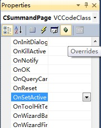
我们只需在OnSetActive函数体中添加相关代码就可以实现添加“下一步”按钮的效果了。新的函数体如下：1
2
3
4
5
6
7
8
9
10
11
12C++代码
BOOL CSummandPage::OnSetActive()
{
// TODO: Add your specialized code here and/or call the base class
// 获得父窗口，即属性表CPropertySheet类
CPropertySheet* psheet = (CPropertySheet*) GetParent();
// 设置属性表只有“下一步”按钮
psheet->SetWizardButtons(PSWIZB_NEXT);
return CPropertyPage::OnSetActive();
}
为第二个和第三个对话框也分别添加属性页类CAddendPage和CAddPage。但第二个对话框的属性页不需要重载OnSetActive函数。第三个对话框是最后一个对话框，所以不需要“下一步”按钮，而应该换成“完成”按钮，所以也需要重载OnSetActive函数设置“完成”按钮。重载后的OnSetActive如下：1
2
3
4
5
6
7
8
9
10
11
12C++代码
BOOL CAddPage::OnSetActive()
{
// TODO: Add your specialized code here and/or call the base class
// 获得父窗口，即属性表CPropertySheet类
CPropertySheet* psheet = (CPropertySheet*) GetParent();
//设置属性表只有“完成”按钮
psheet->SetFinishText(_T("完成"));
return CPropertyPage::OnSetActive();
}
上面的代码段中，字符串“完成”前加了个_T，这是因为本工程创建的时候用的默认的Unicode字符集，而如果“完成”前不加_T就是ASCII字符串。_T实际上是一个宏，工程的字符集选择为Unicode时字符串就转为Unicode字符串，选择为Muli-Byte时就转为ASCII字符串。我们可以在Solution Explorer的Addition根节点上点右键，在右键菜单上选择“Properties”，弹出工程的属性对话框，Configuration Properties->General右侧列表中的Character Set就显示选择的字符集。
那点了第三个属性页上的“完成”按钮我们想进行某些处理的话，就重载OnWizardFinish函数，方法同OnSetActive函数。重载后的OnWizardFinish函数如下：1
2
3
4
5
6
7
8
9
10C++代码
BOOL CAddPage::OnWizardFinish()
{
// TODO: Add your specialized code here and/or call the base class
// 提示向导完成
MessageBox(_T("使用说明向导已阅读完！"));
return CPropertyPage::OnWizardFinish();
}
3.创建属性表类
属性页资源和属性页类创建完以后，还不能生成向导对话框，我们还需要一个属性表类，来容纳这些属性页。
在Solution Explorer视图中的根节点“Addition”上点右键，在右键菜单中选择Add->Class，弹出“Add Class”对话框，然后在中间区域中选择“MFC Class”，点“Add”按钮，弹出另一个类向导对话框，设置Class name为CAddSheet，Base class选择“CPropertySheet”，点“Finish”按钮，这样就属性表类就建好了。
接下来，在新生成的AddSheet.h中包含三个属性页类的头文件：
#include “SummandPage.h”
#include “AddendPage.h”
#include “AddPage.h”
之后在AddSheet.h中添加private变量：
CSummandPage m_summandPage;C
CAddendPage m_addendPage;
CAddPage m_addPage;
然后在AddSheet.cpp文件中修改CAddSheet的两个构造函数为：1
2
3
4
5
6
7
8
9
10
11
12
13
14
15
16
17
18C++代码
CAddSheet::CAddSheet(UINT nIDCaption, CWnd* pParentWnd, UINT iSelectPage)
:CPropertySheet(nIDCaption, pParentWnd, iSelectPage)
{
// 添加三个属性页到属性表
AddPage(&m_summandPage);
AddPage(&m_addendPage);
AddPage(&m_addPage);
}
CAddSheet::CAddSheet(LPCTSTR pszCaption, CWnd* pParentWnd, UINT iSelectPage)
:CPropertySheet(pszCaption, pParentWnd, iSelectPage)
{
// 添加三个属性页到属性表
AddPage(&m_summandPage);
AddPage(&m_addendPage);
AddPage(&m_addPage);
}
4.显示向导对话框
我们在加法计算器对话框上添加一个按钮，点击它就打开向导对话框。此按钮的ID设为IDC_INSTRUCT_BUTTON，Caption属性设为“使用说明”。
按照为控件添加消息处理函数中所讲方法，为IDC_INSTRUCT_BUTTON按钮在CAdditionDlg类中添加点击消息的处理函数OnBnClickedInstructButton。然后在AdditionDlg.cpp文件中包含CAddSheet的头文件：#include “AddSheet.h”。最后修改OnBnClickedInstructButton函数如下：1
2
3
4
5
6
7
8
9
10
11
12C++代码
void CAdditionDlg::OnBnClickedInstructButton()
{
// TODO: Add your control notification handler code here
// 创建属性表对象
CAddSheet sheet(_T(""));
// 设置属性对话框为向导对话框
sheet.SetWizardMode();
// 打开模态向导对话框
sheet.DoModal();
}
到此，向导对话框就完整的创建完成了，并可以在加法计算器对话框上点“使用说明”按钮显示出来。我们来看看效果吧：
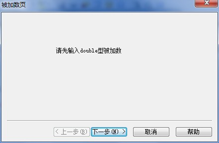
上图只是被加数页的效果，点其上“下一步”按钮就可以继续显示后面的两个页面。
是不是向导对话框没有以前想象的那般复杂了？大家可以发挥想象，进行更复杂的修改，实现更完善的功能。依然欢迎朋友们到博客来交流学习。
属性页对话框包括向导对话框和一般属性页对话框两类，上一节讲了如何创建并显示向导对话框，本节将继续介绍一般属性页对话框的创建和显示。
实际上，一般属性页对话框的创建和显示过程和向导对话框是很类似的。将上一节中的向导对话框进行少量修改，使其成为一般属性页对话框。
一般属性页对话框的创建步骤：
1.创建属性页对话框资源
属性页对话框资源的创建方法同向导对话框是一样的，上一讲中的对话框资源不需进行任何修改。
2.创建属性页类
属性页类的创建和向导对话框的属性页类也基本一样，只是一般属性页对话框中不需要“下一步”和“完成”等按钮，所以上一讲中属性页类的OnSetActive和OnWizardFinish等重载函数可以去掉。即CSummandPage类中的OnSetActive函数、CAddPage类中的OnSetActive函数和OnWizardFinish函数可以删除或注释掉。其他部分不需作任何修改。
3.创建属性表类
创建属性表类的过程同向导对话框属性表类也是一样的，所以上一讲中的CAddSheet类不需修改。
4.显示一般属性页对话框
上一讲向导对话框的显示是在OnBnClickedInstructButton函数中实现的，其中语句sheet.SetWizardMode();旨在设置属性表为向导对话框模式，所以显示一般属性页对话框时不需调用SetWizardMode成员函数。另外，我们可以将属性页对话框的标题设为“使用说明”，在构造属性表对象时将此字符串作为构造函数的参数传入。OnBnClickedInstructButton函数修改如下：1
2
3
4
5
6
7
8
9
10
11C++代码
void CAdditionDlg::OnBnClickedInstructButton()
{
// TODO: Add your control notification handler code here
// 创建属性表对象
CAddSheet sheet(_T("使用说明"));
// 打开模态一般属性页对话框
sheet.DoModal();
}
这样一般属性页对话框的创建和显示就讲完了，我们运行下程序，在结果对话框上点“使用说明”按钮看看效果吧：

再总结下，一般属性页对话框和向导对话框的创建和显示的不同包括，是否需要OnSetActive和OnWizardFinish等重载函数，是否需要调用属性表类的SetWizardMode函数设置为向导对话框模式。
原文链接：https://blog.csdn.net/wang18323834864/article/details/78621633